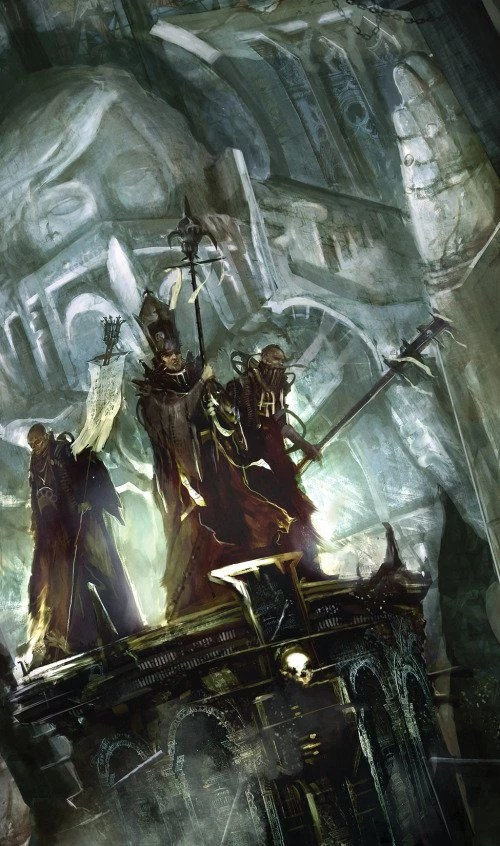

Ecclesiarch
| Ecclesiarch | |
|---|---|
Sigil of the Ecclesiarchy Artwork © Games Workshop | |
| Incumbent Eos Ritira since c. 000.M42 | |
| Adeptus Ministorum High Lords of Terra Ecclesiarchal Palace | |
| Style | His (or Her) Holiness; Arch-Prelate of Terra |
| Type | Head of the Adeptus Ministorum |
| Member of | High Lords of Terra (permanent seat) |
| Reports to | The God-Emperor, in doctrine |
| Seat | Ecclesiarchal Palace, Terra |
| Appointer | The Holy Synod of Cardinals |
| Term length | For life |
| Formation | Early M32, on the recognition of the Temple of the Saviour Emperor as the state church |
| First High Lord | Veneris II (c. 200.M32) |
| Holders | About six hundred |
The Ecclesiarch, also styled the Arch-Prelate of Terra, is the head of the Adeptus Ministorum, the state church of the Imperium of Mankind, and the high priest of the Imperial Cult. The Ecclesiarch is elected for life by the Holy Synod, the assembly of the senior Cardinals, and rules the Ministorum's hierarchy of priests, missionaries and confessors from the Ecclesiarchal Palace on Terra, a fortified complex the size of a continent.[1][2]
The office was created in the early 32nd millennium, when the High Lords of Terra recognised the Temple of the Saviour Emperor as the state religion. An Ecclesiarch was admitted to the council by the middle of that millennium, and the seat has been held without interruption since 546.M32. The Ecclesiarch declares Wars of Faith, directs the Missionarius Galaxia and the Adepta Sororitas, canonises saints, and watches over the orthodoxy of the faithful across a million worlds.[1]
Some six hundred men and women have held the office. Its history is marked by rivalry with the Master of the Administratum, which ended in the usurpation of both offices by Goge Vandire in the 36th millennium and the Reign of Blood. The reformer Sebastian Thor, who succeeded him, is honoured as the greatest Ecclesiarch. Since the return of Roboute Guilliman in 999.M41 the office has been held by Eos Ritira, who succeeded the deposed Baldo Slyst.[3][4]
Election and powers
[edit]On the death of an Ecclesiarch the Holy Synod gathers in the Ecclesiarchal Palace and elects a successor from among its own number. Since the reign of Equitus XI in the mid-36th millennium, the new Ecclesiarch takes a regnal name at coronation; Sebastian Thor, who refused one, was the last to rule under his own. Elections are frequently contested, and the records of the Ministorum name several Ecclesiarchs whose deaths were neither natural nor investigated.[1]
The Ecclesiarch's principal powers are:
- Representation. The Ecclesiarch sits among the High Lords of Terra and speaks for the Ministorum in the Senatorum Imperialis.
- Wars of Faith. Only the Ecclesiarch may declare a War of Faith, calling the faithful of whole sectors to arms against a heretic or xenos foe.
- Doctrine. The Ecclesiarch defines the orthodox worship of the God-Emperor, recognises saints and issues the decrees of the Ministorum.
- The Orders Militant. Under the Decree Passive of the 36th millennium the Ministorum may keep no "men under arms". The Adepta Sororitas, which is answerable to the Ecclesiarch, is the means by which it keeps a fighting force within that law.
History
[edit]Foundation (early M32)
[edit]The worship of the Emperor as a god was forbidden under the Imperial Truth during the Great Crusade, and spread in secret through the ranks of the Imperial armies as the Lectitio Divinitatus. After the Horus Heresy many sects grew up across the Imperium, and the most powerful, the Temple of the Saviour Emperor, spread from Terra. In the early 32nd millennium the High Lords, seeing the value of a single faith for the unity of the realm, declared it the state religion, and its leader took the title of Ecclesiarch.[1]
In the middle of the 32nd millennium, about 200.M32 by one reckoning, the Ecclesiarch Veneris II was the first to be given a seat in the Senatorum Imperialis. Imperial accounts differ on when the seat became permanent: the Ministorum's chronicles say three centuries after Veneris, while other records make it permanent under Ostulus, who replaced Mesring in 546.M32 and passed it to each of his successors.[1][5]
War of the Beast (544–546.M32)
[edit]The Ecclesiarch at the outbreak of the War of the Beast in 544.M32 was Erekart Mesring, a scion of a merchant family who used his seat to protect his house's shipyards. He was an ally of the Lord High Admiral Lansung. Poisoned by the Grand Master of Assassins Drakan Vangorich, he was forced to declare a War of Faith against the Orks. He survived the deadline, though Vangorich never meant to give him the antidote, and he lent his voice and blessing to the disastrous Proletarian Crusade. In the Orks' last onslaught he was killed, after raving a half-mad astropathic message that nearby worlds should throw open their gates to the Beast; several Cardinal Worlds obeyed and were massacred. His successor Ostulus took the seat in 546.M32 and ruled beside the Lord Protector Vangorich after the Beheading.[6]
Ophelia VII and the rise of the Ministorum (M34–M35)
[edit]The Ministorum grew in wealth and power over the following millennia. In c. 200.M34 the Ecclesiarch Benedin IV moved the seat of the church from Terra to the shrine world of Ophelia VII, putting distance between himself and the Senatorum. A century later, in c. 300.M34, Greigor XI announced its return to Terra. He died of poison before the move was complete, but it went ahead, and the Ecclesiarchy's control over the council grew.[1][a] In the 35th millennium Alexis XXI corrupted members of the Officio Assassinorum and used them to remove governors who opposed him.[1]
Age of Apostasy (M36)
[edit]
At the beginning of the 36th millennium the Ecclesiarch was Paulis III, a weak man controlled by the Master of the Administratum, Goge Vandire. Vandire had him executed for heresy and took the Ecclesiarchy himself, c. 308.M36, becoming the only person in Imperial history to hold both offices. The Reign of Blood that followed lasted some seventy years. It ended in c. 378.M36, when Sebastian Thor of Dimmamar led a great army against Terra, Vandire's bodyguard, the Brides of the Emperor under Alicia Dominica, learned the truth of his crimes, and Dominica beheaded him in the Ecclesiarchal Palace.[3]
Thor was tried by the High Lords and acquitted. He refused the office of Ecclesiarch until the Captain-General of the Adeptus Custodes, Excelsor, persuaded him to accept it. As Ecclesiarch (from 378.M36 until his death) he issued the Decree Passive, which forbade the church to keep armies, and turned the Brides into the Adepta Sororitas. He died in office and was declared a saint.[3]

His successor Equitus XI completed the organisation of the Sororitas, created the convents and appointed the first Abbess Sanctorum. Alexis XXII (late M36) divided the two convents into four Orders Militant.[3]
Later millennia (M37–M41)
[edit]Deacis VI (mid-M38) spread the Sisterhood further and founded the Orders of the Bloody Rose and the Sacred Rose. In the 39th millennium Inovian III canonised the heroes of the Redemption Crusades, and Umberto II reasserted the authority of the Ministorum over the Imperium for the first time since Vandire. Decius XXIII, of the late 41st millennium, quarrelled repeatedly with the Inquisition; Ministorum records say his corruption brought him to his death at the hands of the Living Saint.[1][b]
Era Indomitus (999.M41 – present)
[edit]At the time of the Thirteenth Black Crusade in 999.M41 the Ecclesiarch was Baldo Slyst, who opposed the Chancellor Lev Tieron's attempt to release the Adeptus Custodes from their oath to remain on Terra. Slyst was among the High Lords removed by Guilliman after his return. He joined the former Master of the Administratum Irthu Haemotalion in the Hexarchy, and was killed by the agents of the Grand Master of Assassins Fadix when its coup failed in early M42. Eos Ritira, appointed when Guilliman restored the council (c. 000.M42), is the incumbent.[4][c]
List of holders
[edit]The Ministorum numbers about six hundred Ecclesiarchs. The table lists those named in the public record, in order.
| Ecclesiarch | Reign | Notes | End of reign |
|---|---|---|---|
| Veneris II | c. 200.M32 | First Ecclesiarch to sit among the High Lords | Old age |
| Erekart Mesring | By 544 – 546.M32 | Ally of Lansung; declared a War of Faith against the Beast | Killed in the Orks' onslaught |
| Ostulus | 546.M32 – ? | Seat made permanent; served under the Lord Protector Vangorich | Unrecorded |
| Benedin IV | c. 200.M34[a] | Moved the seat to Ophelia VII | Unrecorded |
| Greigor XI | c. 300.M34 | Ordered the return to Terra | Poisoned |
| Alexis XXI | M35 | Used Assassins against rebel governors | Unrecorded |
| Paulis III | Early M36 – c. 308.M36 | Puppet of Vandire | Executed by Vandire |
| Goge Vandire | c. 308 – c. 378.M36 | Also Master of the Administratum; the Reign of Blood | Beheaded by Alicia Dominica |
| Sebastian Thor | 378.M36 until his death | Decree Passive; founded the Adepta Sororitas; canonised | Old age |
| Equitus XI | M36 (after Thor) | Restored regnal names; created the convents and the office of Abbess | Old age |
| Alexis XXII | Late M36 | Divided the convents | Unrecorded |
| Deacis VI | Mid-M38 | Founded new Orders of the Sororitas | Unrecorded |
| Umberto II | M39 | Reasserted Ministorum authority; canonised | Unrecorded |
| Inovian III | M39 | Canonised the heroes of the Redemption Crusades | Unrecorded |
| Decius XXIII | M41 | Clashed with the Inquisition | Killed, by devotional account, by Saint Celestine |
| Baldo Slyst | By 999.M41 – c. 000.M42 | Deposed by Guilliman; joined the Hexarchy | Deposed; killed early M42 |
| Eos Ritira | c. 000.M42 – present | Incumbent | – |
An Ecclesiarch named Dorrl III, who founded the Order of the Iron Veil, and Theodacus V, author of the Verses of Dusk, are recorded without dates.[1]
Timeline
[edit]| Date | Event |
|---|---|
| Early M32 | Temple of the Saviour Emperor made the state religion; office of Ecclesiarch created |
| c. 200.M32 | Veneris II admitted to the High Lords |
| 546.M32 | Mesring killed in the Ork onslaught; Ostulus becomes Ecclesiarch |
| c. 200.M34 | Seat moved to Ophelia VII |
| c. 300.M34 | Return to Terra ordered |
| c. 308.M36 | Goge Vandire usurps the office |
| c. 378.M36 | Vandire killed; Sebastian Thor elected |
| 999.M41 | Guilliman returns; Baldo Slyst later deposed |
| c. 000.M42 | Eos Ritira becomes Ecclesiarch |
See also
[edit]Notes
[edit]- ^ a b The Ministorum's chronicles place both moves in M34; Administratum histories date them to the 35th millennium. This article follows the Ministorum.
- ^ The manner of Decius XXIII's death is recorded only in a devotional account and is not confirmed by the Synod's records.
- ^ The year of the Hexarchy's coup is not recorded in the available sources. It is estimated as c. 000–012.M42.
References
[edit]- ^ a b c d e f g h i The Beast Must Die (novel) by Gav Thorpe, Ch. 1. Haley, Guy. The Beheading (novel). Black Library, Ch. 13.
- ^ Echoes of the Long War (novel) by David Guymer, Ch. 18. Abnett, Dan. I Am Slaughter (novel). Black Library, Ch. 9.
- ^ a b c d Sanders, Rob. Predator, Prey (novel). Black Library, Ch. 7. Annandale, David. The Last Wall (novel). Black Library, Chs. 5, 13.
- ^ a b Sanders, Rob. Shadow of Ullanor (novel). Black Library, Ch. 2. Haley, Guy. Throneworld (novel). Black Library, Ch. 21.
- ^ Annandale, David. Watchers in Death (novel). Black Library, Ch. 4. Wraight, Chris. Watchers of the Throne: The Emperor's Legion (novel). Black Library, Ch. 2.
- ^ Mitchell, Sandy. The Emperor's Finest (novel). Black Library. Annandale, David. The Hunt for Vulkan (novel). Black Library, Epilogue.